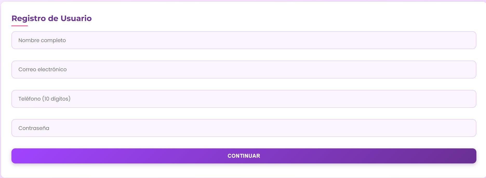

Comprendiendo la Aplicación
Menú de la página
- Ir al inicio
- Ir a la pagina de informacion sobre el acoso
- Registrar tu Contacto de Emergencia
- Ir al Glosario
- Realizar tu encuesta sobre el acoso
- Inciair sesion
En la parte posterior de la pagina se encuentra nuestro menu, el cual contiene los botones para:
Registro e Inicio de Sesión:
-
Para nuevos usuarios:
- Haz clic en "Iniciar Sesión" en el menú
- Selecciona "Registrarse"
-
Completa el formulario con:
- Nombre completo
- Correo electrónico
- Teléfono (10 dígitos)
- Contraseña segura
- Haz clic en "Continuar"
-
Registra tu Contacto de Emergencia con:
- Nombre de tu contacto
- Seleccionas el parentezco con el contacto
- El numero de tu contacto (10digitos)
- Haz clic en "Continuar" 
Para usuarios registrados:
Haz clic en "Iniciar Sesión" e ingresa tus credenciales.
Uso del Botón de Pánico (Función Principal)
- Desde la página principal, localiza la sección "Botón de Pánico"
- Haz clic en el botón rojo "¡PÁNICO!"
-
Se abrirá un modal donde podrás:
- Identificar el nivel de acoso (del 1 al 5)
- Ver descripciones de cada nivel
- Enviar una alerta o cancelar
Encuesta de Acoso
- Desde el menú, selecciona "Encuesta de Acoso"
- Lee atentamente la introducción sobre confidencialidad
- Responde las 10 preguntas seleccionando una opción por cada una
- Cuando hayas respondido todas, aparecerá el botón "Continuar"
- Haz clic en "Continuar" para enviar tus respuestas
Glosario de Términos
- Desde el menú, selecciona "Glosario"
- Explora los términos importantes sobre acoso sexual
- Cada término incluye:
- Definición clara
- Referencia académica
- Enlace para más información
Información y Recursos
- Desde el menú, selecciona "Información"
- Encontrarás secciones sobre:
- Niveles de acoso sexual (leve, moderado, grave)
- Qué hacer si eres víctima
- Protocolos de acoso sexual
- Centros de atención especializada
- Ubicación de secretarías de la mujer
Cada sección incluye enlaces a recursos oficiales